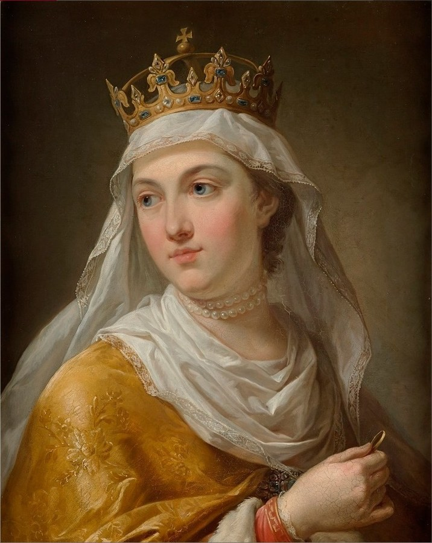

Jadvyga (Jadwiga)¶
Summary¶
Jadvyga (Jadwiga of Anjou, 1373/74 - 17 July 1399) is crowned King (rex) of Poland at about ten and marries Jogaila at twelve. In the saga she is the Saint-King: sincere, pious, wise beyond her years, sold into a marriage she believes is a mission from God. She is also the unwilling vessel of the White Silence, a cold Force that gathers where baptisms are bought, and whose touch makes her heal with frost. She dies at twenty-five, days after burying her newborn daughter, and her tomb on Wawel becomes the Force’s anchor in Poland.
Jadvyga (Jadwiga)

Jadvyga (Jadwiga) · character — Image: Marcello Bacciarelli, Public domain via Wikimedia Commons¶

Type |
character |
Years |
1373–1399 |
Status |
Historical record |
Note |
Queen of Poland (1384–1399); married Jogaila in 1386, uniting Poland and Lithuania; venerated as a saint. |
Appearance & tells¶
Ethereal and delicate, with reddish-gold hair, dressed in the height of Western fashion with crowns, silks and pearls, and always carrying a small black crucifix. Her tells are the White Silence’s: a cold calm spreads from her in council so that people find it hard to lie; her touch heals but leaves a faint layer of frost; warmth and sound leave her. In Book II ch. 21 there is frost on the sheets in July. Jogaila finds the stone of her tomb frosted in March 1401 (Book III ch. 3).
Want · Need · Lie · Truth¶
Want (external) |
To christianise the north and to see Lithuania baptised; to endow schools and the poor; to defend her crown’s rights. |
Need (internal) |
To be loved as a girl and not only as a crown, and to be allowed to keep her childhood betrothal, Wilhelm of Habsburg. |
Lie they believe |
That a holy end justifies a political marriage, and that the cold calm she feels is holy. |
Truth they learn (or refuse) |
Eglė’s dream-warning, which she half-hears: the White Silence will freeze her heart before it saves her soul. Her death in childbirth makes it literal (Book II ch. 21). |
Arc by book¶
Book I (1385-87): the offstage prize of the Union of Krėva (ch. 28b, where she is not present); Vytautas and Jogaila’s baptisms and the baptism of Lithuania are bought in her name (ch. 28-29).
Book II (1392-99): the sympathetic crown behind Ostrów (ch. 10, though the record has no mediation by her); POV of ch. 21, Šerkšnas ant Vavelio (22 Jun - 17 Jul 1399): she bears Elżbieta Bonifacja, who dies within weeks, and dies herself. Her warning against the steppe war is saga (ch. 21, 22).
Book III (1401-1411): her frozen tomb keeps Jogaila honest (ch. 3, 13, 18, 24, 27, 30).
Book V: the White Silence’s anchor is felt in Kraków while Žygimantas bargains for Polish overlordship (ch. 6, 12).
Power & magic¶
Tier 5, the White Silence’s unwilling vessel: its touch is granted, not asked. She heals with frost and holy calm (the white touch); calm, fearlessness and the inability to lie follow her into council; at her death her body becomes the Force’s anchor in the Polish heartland. She is its victim, not its servant. In a dream Eglė warns her of the Force; the Amber Queen takes up her grief for the lost betrothed and amber “pearls” appear on the Baltic shore.
Record vs saga¶
[Historical record]: Born 1373 or 1374 (Buda), daughter of Louis I of Hungary and Elizabeth of Bosnia; crowned King of Poland on 16 October 1384, aged about ten. She was betrothed to Wilhelm of Habsburg and gave up the match for the crown. She married Jogaila in Kraków on 18 February 1386 (he was baptised Władysław on 15 February and crowned on 4 March). In 1387 she led the expedition that recovered Red Ruthenia. She refounded the Kraków Academy by bequest (1400) and gave birth to a daughter, Elżbieta Bonifacja, on 22 June 1399; the baby died on 13 July and Jadwiga followed on 17 July 1399. She was canonised in 1997. See Wikipedia.
[The saga’s invention]: The White Silence as her unwilling anchor; Eglė’s dream-warning; Jadwiga’s warning against the Vorskla campaign (Book II ch. 21, no source); frost on the sheets. There is no record that she mediated Ostrów (1392): Jogaila’s envoy was Henryk of Masovia.
Pronunciation¶
jad-VY-ga (/jɐdˈviːɡɐ/), English respelling yahd-VEE-gah; stress on the second syllable. Polish Jadwiga (yahd-VEE-gah), Latin Hedvig.
Appearances¶
Book I: ch. 28, 28b. Book II: ch. 10, 21 (POV), 22, 29 and the afterword. Book III: ch. 3, 13, 18, 24, 27, 30 (as the tomb / the memory). Book V: ch. 6, 12 and the afterword.
Relations
Practises: White Silence’s frost-touch (1386–…) — tier 5
Rules: Kingdom of Poland (Lesser Poland lords) (1384–1399)
Spouse: Jogaila (1386–1399)
Took part in: Jadvyga dies · Jogaila baptised, married, crowned in Kraków
Vessel of: Baltoji Tyla (White Silence) (1386–1399)
Timeline¶
Year |
Event |
Book |
|---|---|---|
1386-02-15 |
I · The Wolf’s Exile |
|
1399-07-17 |
II · The Golden Shadow |
Connections¶
graph LR
ev_jadvyga_dies["Jadvyga dies"]
ev_krakow_1386["Jogaila baptised, married, crowned in Kraków"]
jadvyga["Jadvyga (Jadwiga)"]
jogaila["Jogaila"]
poland["Kingdom of Poland (Lesser Poland lords)"]
white_silence["Baltoji Tyla (White Silence)"]
white_touch["White Silence's frost-touch"]
jadvyga -->|Rules| poland
jadvyga -->|Vessel of| white_silence
jadvyga -->|Practises| white_touch
jadvyga -->|Took part in| ev_krakow_1386
jadvyga -->|Took part in| ev_jadvyga_dies
jogaila -->|Spouse| jadvyga
style jadvyga stroke-width:3px